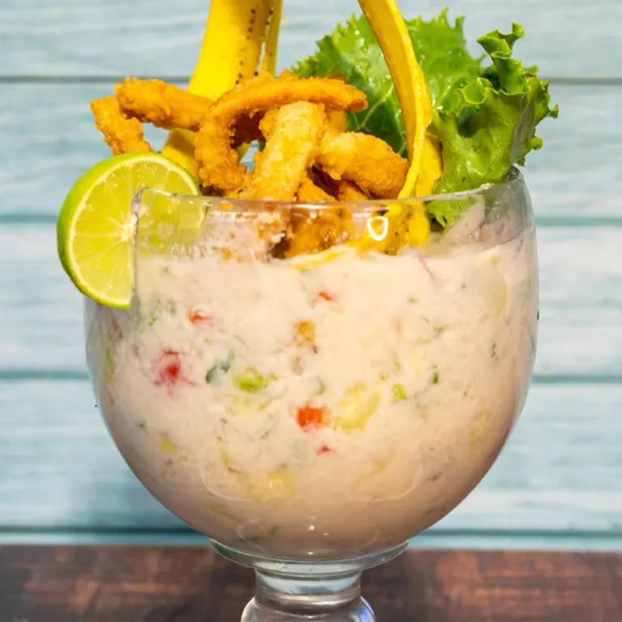

Leche de Tigre
Back to Home

Description
La leche de tigre es un plato peruano hecho con jugo de limón, pescado fresco, ají y cilantro.
Es refrescante, picante y lleno de sabor. ¡Perfecto como entrada o como cura para la resaca!
Ingredients
- 500g de pescado blanco fresco (corvina o lenguado)
- 1 taza de jugo de limón
- 1 ají limo picado
- 1 diente de ajo
- 1 trozo de jengibre
- Cilantro al gusto
- Sal y pimienta al gusto
- Cebolla roja en tiras
Steps
- Corta el pescado en cubos pequeños.
- Mezcla el jugo de limón con ajo, jengibre y ají limo.
- Agrega el pescado y deja marinar por 10 minutos.
- Añade la cebolla roja y el cilantro.
- Sazona con sal y pimienta.
- Sirve frío en vasos o bowls pequeños.